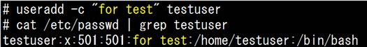

- 問題ID : 15297 アカウント管理
- 履歴
正解
useradd -c
解説
ユーザアカウントを作成するには、「useradd」コマンドを使用します。
useraddコマンドの書式と主なオプションは以下の通りです。
useradd [オプション] ユーザ名
上表より正解は
・useradd -c
です。
例）ユーザtestuserを作成する際「for test」というコメントを加える場合

「/etc/passwd」ファイルの書式については参考をご確認ください。
その他の選択肢については上表をご確認ください。
参考
■「/etc/passwd」ファイル
ユーザのアカウント情報は「/etc/passwd」ファイルに格納されています。
以下は「/etc/passwd」ファイルの書式と各項目の説明です。
ユーザ名：パスワード：UID：GID：コメント：ホームディレクトリ：ログインシェル
・ユーザ名 ： 一意のユーザ名
・パスワード ： ユーザのパスワード。
・UID ： ユーザのUID（ユーザID）。UIDはユーザを識別するための一意のID
・GID ： ユーザのプライマリグループのGID（グループID）。GIDはグループを識別するための一意のID
・コメント ： ユーザに関する任意のコメント（省略可）
・ホームディレクトリ ： ユーザのホームディレクトリ
・ログインシェル ： ユーザのログインシェル（ログイン時に使用されるデフォルトのシェル）
現
在のシステムでは暗号化されたパスワード（シャドウパスワード）が使用されており、パスワード欄には「x」が入ります。この場合、パスワードは「/etc
/shadow」ファイルに格納されます。「/etc/shadow」ファイルはrootユーザのみしか読み書きができません。なお、「/etc
/passwd」ファイルのパーミッションは「644」で一般ユーザによる読み出し権限が付与されています。シャドウパスワードを利用することでセキュリ
ティレベルが上がります。
また、ユーザは1つ以上のグループに参加でき、ユーザが主に所属するグループをプライマリグループといいます。
プライマリグループ以外に参加するグループは補助グループ（supplementary
groups）といいます。グループの情報は「/etc/group」ファイルに格納されます。
■「/etc/group」ファイル
グループに関する情報は「/etc/group」ファイルに格納されています。
以下は「/etc/group」ファイルの書式と各項目の説明です。
グループ名:グループパスワード:GID:グループのメンバーリスト
・グループ名 ： 一意のグループ名
・グループパスワード ： グループのパスワード
・GID ： グループのGID
・グループのメンバーリスト ： グループに所属するメンバー。複数の場合は「,」で区切る
現
在のシステムでは暗号化されたパスワード（シャドウパスワード）が使用されており、パスワード欄には「x」が入ります。この場合、パスワードは「/etc
/gshadow」ファイルに格納されます。「/etc/gshadow」ファイルはrootユーザのみしか読み書きができません。なお、「/etc
/group」ファイルのパーミッションは「644」で一般ユーザによる読み出し権限が付与されています。シャドウパスワードを利用することでセキュリ
ティレベルが上がります。
「グループのメンバーリスト」には、補助グループとして所属しているユーザが設定されます。プライマリグループとして登録しているユーザは含まれません。したがって、所属メンバーがいても、記載されていない場合があります。
■「/etc/shadow」ファイル
「/etc/shadow」ファイルには、暗号化されているパスワード（シャドウパスワード）や、パスワードの有効期限に関する情報が格納されています。
以下は「/etc/shadow」ファイルの書式と各項目の説明です。
ユーザ名：パスワード：日数1：日数2：日数3：日数4：日数5：日数6：フラグ
・ユーザ名 ： 一意のユーザ名（/etc/passwdと同様）
・パスワード ： 暗号化されたパスワード
・日数1 ： 1970/1/1から、パスワードが最後に更新された日までの日数
・日数2 ： パスワードが変更できるようになるまでの日数
・日数3 ： パスワードを変更しなければならなくなる日までの日数
・日数4 ： パスワードの有効期限切れる前に警告をだす日数
・日数5 ： パスワードの有効期限切れからアカウントが使用できなくなるまでの日数
・日数6 ： 1970/1/1から、アカウントが使用できなくなる日までの日数
・フラグ ： 未使用
「/etc/shadow」ファイルはrootユーザのみが読み書きできます。パーミッションは400、600、000などがあり、ディストリビューションやバージョンによって異なります。
以下はユーザ・グループアカウントに関するコマンドをまとめたものです。